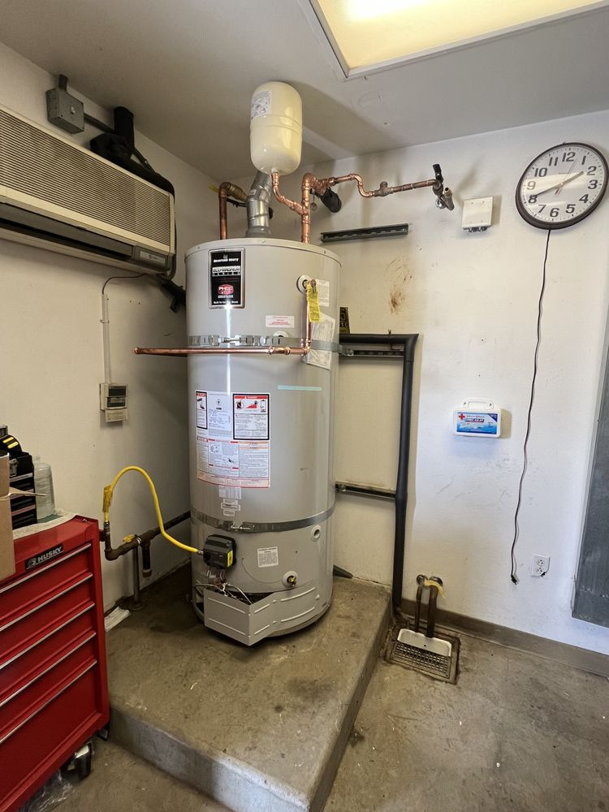
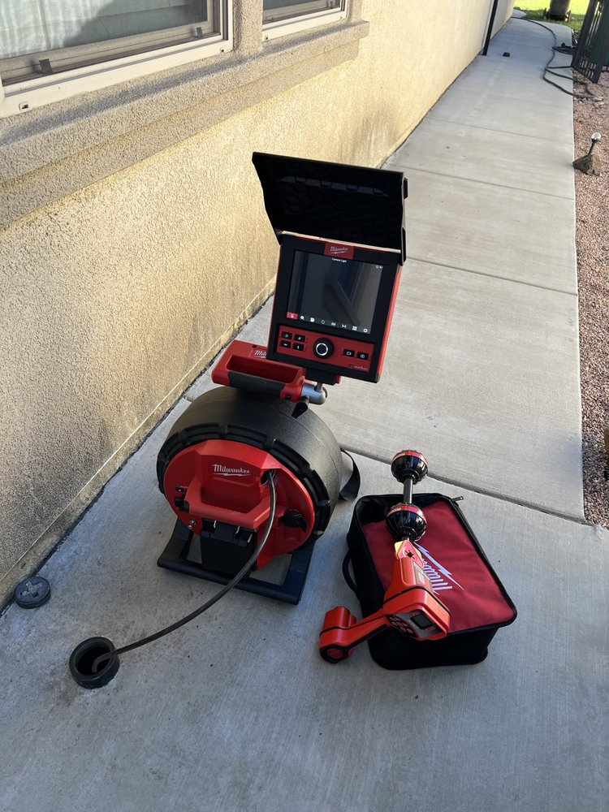
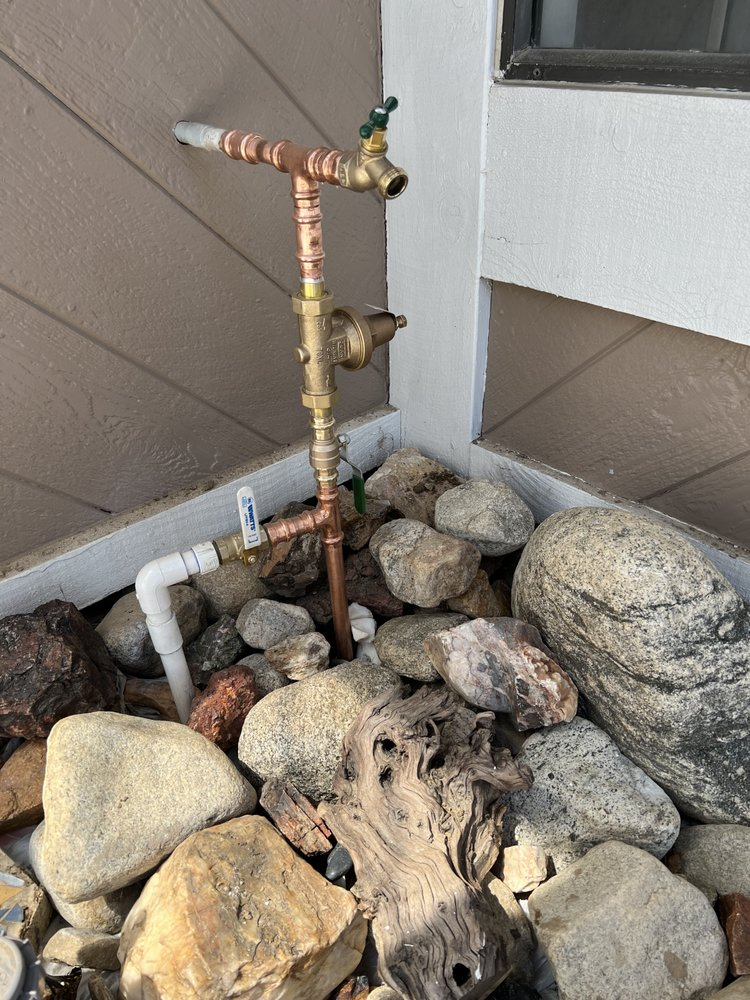
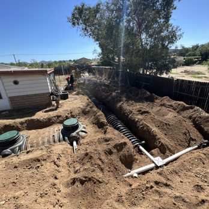
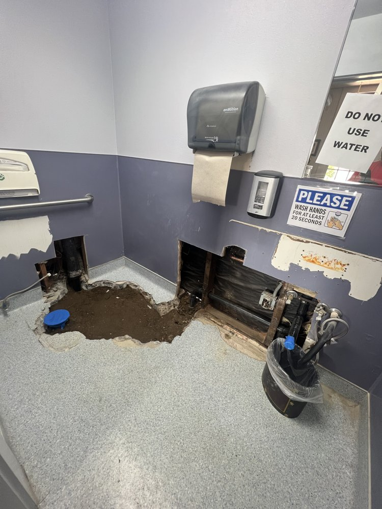
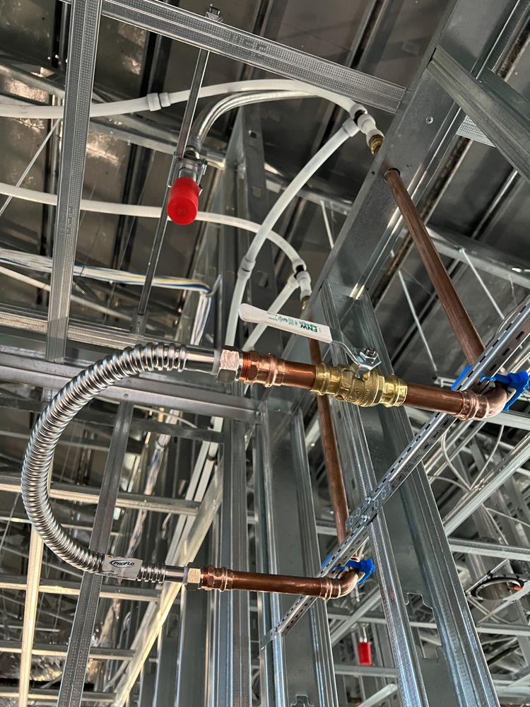
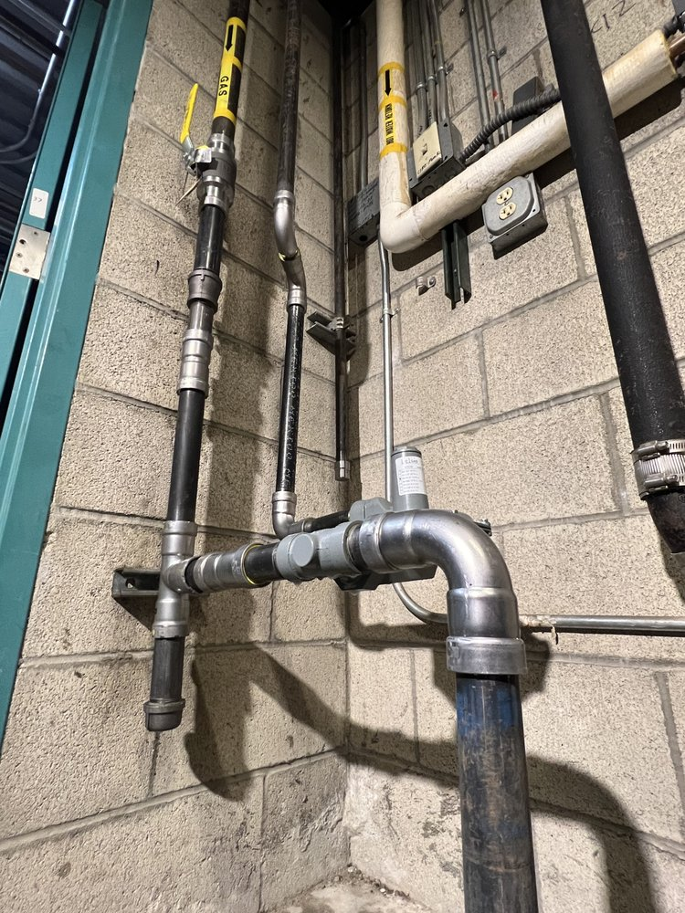
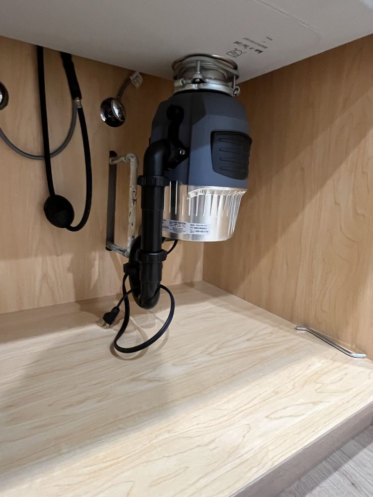

Water Heaters
No hot water is the fastest way to ruin a morning. We repair, maintain, and replace tank water heaters, and we install tankless systems for homes that want endless hot water and space back in the garage. If a repair will buy your current unit a few more good years, we'll say so — we don't replace equipment that isn't done.
Signs you might need thisLukewarm showers, rust-tinted hot water, popping or rumbling from the tank, water pooling at its base.

Drain Cleaning & Inspection
A slow drain is a clog collecting rent. We clear kitchen, bathroom, and main-line drains, then inspect the line so the same blockage doesn't come back next month. Regular cleaning is the cheapest plumbing work there is — it keeps grease, roots, and scale from turning into a repair bill.
Signs you might need thisWater pooling at your feet in the shower, gurgling from the sink, a drain smell that outlives every bottle of cleaner you pour at it.

Leak Detection
Water finds the cheapest way out, and it's rarely somewhere you can see. We locate leaks indoors and out — behind walls, under floors, in yard lines — and pinpoint them before anything gets opened up. You pay to fix the leak, not to hunt for it.
Signs you might need thisA water bill that jumped with no change in habits, a meter that spins with every fixture off, damp drywall or a musty smell in one spot.

Sewer Line Repair Specialty
A damaged sewer line used to mean a trench across the yard. Our trenchless repair fixes broken, clogged, or collapsed underground pipes through small access points — lawn, driveway, and landscaping stay intact. We camera the line first so you see exactly what's wrong and where, and if a line is too far gone for trenchless, we'll show you the footage and say so.
Signs you might need thisSeveral drains backing up at once, sewage odor in the yard, one stripe of grass noticeably greener than the rest.

Slab Leaks
A pipe leaking under your foundation doesn't announce itself — it just runs, quietly, on your bill. We locate slab leaks precisely so the repair opens one small spot instead of a hallway of concrete, and we fix them to last, not to limp along until the next one.
Signs you might need thisA warm patch on the floor, the sound of running water when everything's off, a spiking water bill, new cracks in tile or drywall.

Repipes
Old galvanized and worn copper lines don't fail all at once — they fail one pinhole at a time, each one behind a different wall. When repairs start repeating, we replace the home's water lines end to end: one project, decades of service, no more waiting for the next leak.
Signs you might need thisRusty or metallic-tasting water, pressure that drops when a second fixture opens, leaks showing up in a different spot every year.

Gas Line Installation & Repair
Gas work is not a weekend project. We install, maintain, and repair gas lines — new runs for ranges, dryers, and water heaters, plus repairs and safety testing on existing lines — all done to code by a licensed contractor.
Signs you might need thisA rotten-egg smell, hissing near a line or appliance, a patch of dead grass over a buried line. If the smell is strong, get everyone outside first — then call.

Water Purification Systems Specialty
Inland Empire water is hard — it's why every shower head in the valley wears a white crust. We install HALO whole-home systems: eco-friendly filtration and conditioning that treats every drop entering the house. Better-tasting water from every tap, and less scale on the fixtures, appliances, and pipes that water touches all day.
Signs you might need thisWhite crust on faucets and shower heads, cloudy glassware out of the dishwasher, tap water you keep replacing with bottled because of the taste.
Questions we actually get asked
How fast can you get here in an emergency?
Call (951) 533-3014 and we'll tell you honestly — it depends where you are and what's happening. Active water, sewage backing up, or a gas smell goes to the front of the line, any hour, any day. You'll get a real arrival window when you call, and we'll walk you through stopping the damage (usually: close the main shutoff) before we're there.
Do you do tankless and traditional water heaters? Which should I get?
Both — repair, replacement, and new installs. A standard tank costs less up front and is the right call for plenty of homes. Tankless costs more to install but heats water on demand, so you don't run out, and it frees up garage space. The honest answer depends on your household size, your gas line, and your budget — we'll price both for your house and you pick.
How does trenchless sewer repair actually work?
Instead of digging a trench across your yard to reach the pipe, we work through small access points and repair or replace the line underground. It starts with a camera inspection so we both see exactly what's wrong. Trenchless is usually faster and spares your landscaping, driveway, and hardscape. It's the better option most of the time — but not every time, and if a line is too far gone we'll show you the footage and explain why.
What does a HALO whole-home system actually do?
It treats all the water coming into your house, not just one tap. HALO filters what makes tap water taste and smell off, and conditions the water so hard-water scale stops caking onto fixtures, appliances, and pipes. It's eco-friendly and low-maintenance — better water everywhere, longer-lasting appliances, and no more cases of bottled water in the garage.
Do you guarantee your work?
Yes — satisfaction guaranteed. If something we repaired or installed isn't right, call and we'll come back and make it right. We'd rather fix a callback than have a neighbor telling people we didn't.
How do I know if I need a repipe or just another repair?
One leak is a repair. Leaks showing up in different spots year after year are a pattern — that's the piping itself failing, usually old galvanized steel or worn copper. Add rusty water and falling pressure, and you're already paying for a repipe one emergency at a time. We'll tell you which side of that line your house is on, and price both paths so you can decide.
What should I do before you arrive in an emergency?
Shut off the water. Every fixture has a small stop valve underneath, and the whole house has a main shutoff — usually near the front hose bib or at the meter box by the street. It's worth finding it today, before you need it. If the water heater is what's leaking, close its supply valve too. And if you smell gas, don't flip any switches — get everyone outside first and call from the driveway.
Do you handle commercial properties or just homes?
Both. Houses, rentals, and commercial buildings across the Inland Empire — same plumber, same standard, same upfront pricing. No job too big or small isn't a slogan here; it's the scheduling policy.
Didn't find your question? Call or text — you'll get a straight answer either way.
Know what's wrong? Even if you don't —
Describe what you're seeing and we'll take it from there. Diagnosis first, upfront quote, then the fix.
CA License #1152890 · Licensed, Bonded & Insured · Satisfaction Guaranteed